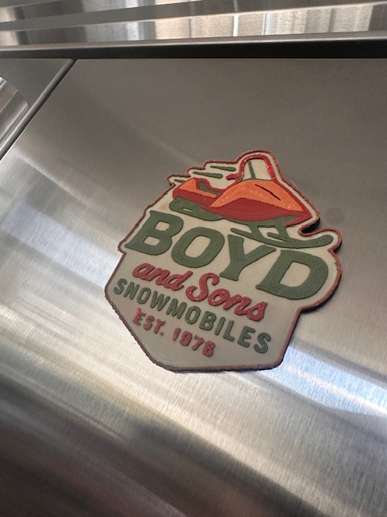

The Snowmobile Symptom
![]()
When I read Andrej Karpathy’s endorsement of “context engineering” in a Twitter exchange with Shopify’s Tobi Lutke, I felt he tapped into something we all felt to some degree:
What Andrej is saying, and advocating, makes perfect sense. And yet, it also made me feel rather uneasy. I’ve been an acknowledged and public sceptic of prompt engineering mainly because I felt that it was a stopgap solution, and I’d say that a year and a half in retrospect, I was mostly proven right. There aren’t millions of prompt engineers raking in fat cheques across the Valley. What we have is smarter LLMs that need a lot less prompt engineering and are much more capable of inferring our desires from our malformed prompts.
That’s how systems grow up. And they really do. They overtake our haphazard stopgap measures before we even have time to get worn by the hype cycle they engender. Even so, I was glad Andrej made that point, because it highlights what I think is the bigger – no pun intended – context: in shining the light on yet another stopgap we use to paper over the inadequacies of our allegedly agentic universe, he illuminated the need for what I previously pointed out, namely a comprehensive system of agentic interaction. The very existence of context engineering as a discipline is an admission of failure, an acknowledgment that our agentic systems don’t have the very structures that are required to deliver on their biggest promise.
The snowmobiles we build
In what is probably the most influential briefing any officer ever gave, USAF Col. John Boyd made a very poignant analogy to explain how we synthesise information. Imagine you’re on an alpine slope. Take the skis. Imagine you’re riding a bicycle. Take the handle bars. Now imagine you’re looking at a tank. Take the treads. Put these all together, and you’ve got, mostly, a snowmobile. These distinct domains combine into a single object that makes sense in its own way.1
1 Dr Grant Hammond, formerly of the Air University down at Maxwel AFB and the Air Force Academy down the road at Springs, has compiled an absolutely outstanding version of Boyd’s talk with abundant references that I think does justice to the diversity of material Boyd teaches. It is available for free here, and you should have a copy of it on, like, everything that can store bits. Maj. Ian Brown, US Army, has created a meticulous transcription of the original talk given at Quantico in 1989, for those who prefer the full experience over death-by-Powerpoint. The full talks are, of course, on YouTube.
Context engineering is snowmobile building for the AI age. You take the tools, the MCP connections, the requirements, the sources – all the bits of information that make up the entirety of what we would consider the contextual biome of a task –, and feed it to the LLM. We do, or at least we prototype for the LLM, the task of synthesis: reassembling these fragments into a holistic picture of the task environment. We pull the skis from an API doc, the handles from a github repo and the treads from a coffee cup bottom stained post-it note. It ‘makes sense to us’, and we try to convey this to our helpful assistant, in hopes that putting it into the same frame of mind we are in will allow it to do what we want it to do in our stead.
But here’s the rub: in Boyd’s analogy, humans build the snowmobile. In our current AI paradigm, we’re still the ones building it, really quite manually, when the entire promise of agentic AI was that the agents would handle most of the assembly themselves. We’ve created systems sophisticated enough to use snowmobiles, but not intelligent enough to build them without us laying out all the isntructions.

Just consider your favourite coding copilot. They feed off an understanding of the code, the sources, the instructions, the user’s preferences, external tools, and so on. But they require those to be provided to them well enough to be able to mostly reflect the thought patterns that got the human user to where they are. They are hopeless, or at least much less efficient, if we do not mise en place all the tools for them. Wasn’t that part of the promise of agentic AI – the ability of systems to creatively self-organise, rather than us having to wire everything up for them?
The puppet strings we pretend aren’t there
The problem with context engineering isn’t really context engineering’s fault. As a system, it works. It works quite well, in fact, and if you follow some sensible guidelines, you will get vastly more out of your LLM.2 But the very fact that we’re here discussing it is an indication that we are theorycrafting at length to make up for the lack of the agentic agora.
2 I recommend Cole Medin’s repo as a pretty good starter.
The whole thing does, then, have a bit of an elaborate marionette theatre feel. We speak of agents but their agency is ultimately quite confined by the need for us to spoon-feed them quite a bit about the context. For the most part, we’re not witnessing emergent coordination, we’re watching an elaborate puppet show where humans have pre-scripted every information handoff, pre-defined every communication channel and pre-determined every capability boundary. The agents aren’t a garage band gelling together and learning how to play music with spirit and spontaneity. They are a room full of player pianos ticking down the same tune someone had to painstakingly design and encode into the player rolls.
The security implications reveal just how non-agentic these systems truly are. Context poisoning attacks work because our agents have no genuine ability to evaluate information sources on their own, no real understanding of trust and do not exist in spaces that govern trust exchange without such trust being ultimately pre-scripted. An agent doesn’t know whom they can trust, nor how they can represent their trustworthiness in a computationally meaningful, verifiable manner. That we need to engineer defensive contexts to protect our AI systems is perhaps the clearest indication that these systems are free agents… free to be manipulated and misled in the absence of an agentic agora that has its own rules and enforcement logic.
Towards true agency beyond context engineering
Don’t get me wrong – I’m not dismissing context engineering. If anything, quite the opposite. Given the current limitations of LLMs, context engineering is not just sensible but an essential adaptation to the reality that these models need plenty of handholding to be useful, much more than we would hope they would need in a true agentic system. It’s also an indication of where the failure lies – because these models are operating just fine. It’s not their shortcoming, or indeed that of agents. It’s the lack of an infrastructure of interaction. Agents become truly agentic when they have something to act on, to interact with, to connect. We have built ecosystems to use, develop and deploy models and agents, but not to allow for these interactions in a meaningful way. We’re looking at a factory of consummate professionals in the art of assembling snowmobiles, waiting for someone, anyone, to get them the parts, in the right order, at the right time.
The entire context engineering story (I’m not going to call it hype just yet, because it hasn’t reached fever pitch, but I am sure we will see more and more LinkedIn bios proclaiming context engineering expertise!) ultimately pulls the fig leaf off the coordination problem we’re trying to patch up with the current attempts at agentic interoperability. Once again, those steps, too, have plenty of merit. They just aren’t exhaustive. We’re building infrastructure to help humans manage information for AI, when we should be building infrastructure for AI to manage information for itself. Every context engineering best practice is a workaround for missing agent capabilities. Memory architectures are cheat codes to help agents that don’t have the architecture to manage state properly. Context compression is a workaround for prioritising information. Specifying tools and toolkits is necessary because agents can’t discover such tools and negotiate trust relationships with them.
What we’re really engineering when we claim to be doing context engineering is, ultimately, not really the context of our question but the context of the agent. We have to equip the agent with what ought to be what Sartre would call pre-reflexive self-awareness, an understanding of where one is situated in the world and what’s around it. It’s not, or at least not just, about us telling the agent the context of our ask. It’s about us having to tell the agent the context of its own existence, its own capabilities, its own environment. We’re forcing humans to herd cats for systems that should be capable of finding and sharing knowledge autonomously. Every context engineering solution is a monument to this missing infrastructure.
What next may come
What we need are digital agoras – spaces where AI agents can discover capabilities, share information, and coordinate without needing this human intermediacy. That’s not because human oversight is bad, but because true agency requires the ability to discover and evaluate information independently. MCP and A2A represent tentative steps in this direction, but they still ultimately rely on humans wiring up the connections. The promise of agentic AI is that this would no longer be needed, that agents could exercise a kind of Auftragstaktik mindset of inferring these needs from some sort of reaching-out and finding adequate resources the way buyers find merchants in the marketplace. There’s, then, nothing ‘wrong’ with context engineering per se. What would however be a mistake is to consider it a destination, rather than a transitional phase. Every talk on context engineering, every new ‘supertool’, every clever prompting technique is progress – that we shouldn’t, however, let become procrastination.
When context engineering becomes unnecessary, we’ll know our agents have finally grown up. The path forward isn’t through better context engineering, but through making it obsolete. Digital agoras, agent discovery protocols, emergent coordination mechanisms: these aren’t nice-to-haves, they are the sine qua nons for genuine AI agency. Every moment we spend perfecting context engineering is a moment we’re not spending on building the infrastructure that would make it unnecessary.
At the end of the day, context engineering is our confession, written in code and infrastructure, that we haven’t yet achieved what we claimed. It illuminates the partial success of agents: success, because agentic AI is tremendously powerful, but partially so, because it needs us to coordinate for them. So while context engineering will tide us over for a while the way prompt engineering has done for its hour, we shouldn’t forget that it’s a band-aid, no more. We should welcome context engineering… while awaiting the day we can finally retire it.
Note: These are my personal (and somewhat tongue-in-cheek) views, and may not reflect the views of any organisation, company or board I am associated with, in particular HCLTech or HCL America Inc. My day-to-day consulting practice is complex, tailored to client needs and informed by a range of viewpoints and contributors. Click here for a full disclaimer.
Citation
@misc{csefalvay2025,
author = {{Chris von Csefalvay}},
title = {The {Snowmobile} {Symptom}},
date = {2025-07-06},
url = {https://chrisvoncsefalvay.com/posts/context-engineering/},
langid = {en-GB}
}